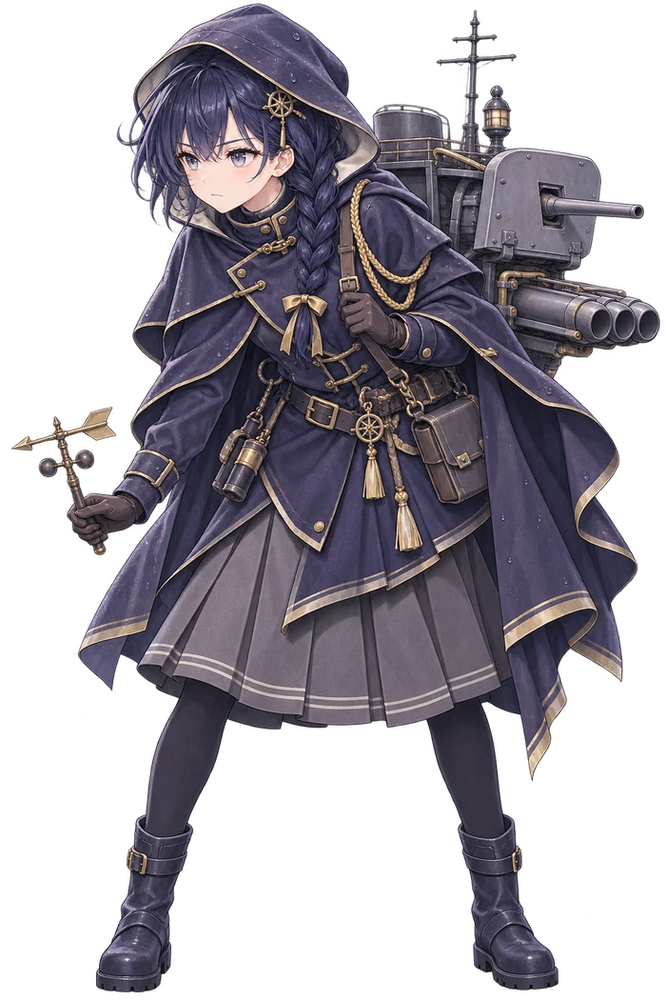

05
远洋装饰
OCEAN LINER DECO把母港做成旗舰的远洋沙龙：黑漆、象牙、香槟金、祖母绿；几何放射线，细金线；数据像舱单，不像仪表盘。
Bodoni / 宋体 / 等宽
BLACK · IVORY · CHAMPAGNE
BLACK · IVORY · CHAMPAGNE
01 / 母港
母港
旗舰沙龙。战役、军需、征募在同一张黑漆桌上；弗莱彻是领舰，不是一个“驱逐舰”数量。
战役航图军需处军港征募
 弗莱彻 · DD-445 · 领舰
弗莱彻 · DD-445 · 领舰02 / 战役航图
SOLOMONS / 08°S 160°E
CAMP-ALLIES-02 · STORY
埃斯佩兰斯角
夜战。9 个历史舰位，换舰不换位；每艘船独立。
编成9 舰
点价6,825
目标击退夜袭
出 航
03 / 出击编队


阳炎IJN / 04

5 / 5 · EACH HULL IS A GUEST出 航 →
04 / 夜战
NIGHT ACTION22:40 / 5 CONTACTS
010203040522:40航速 26接触 5主炮 就绪